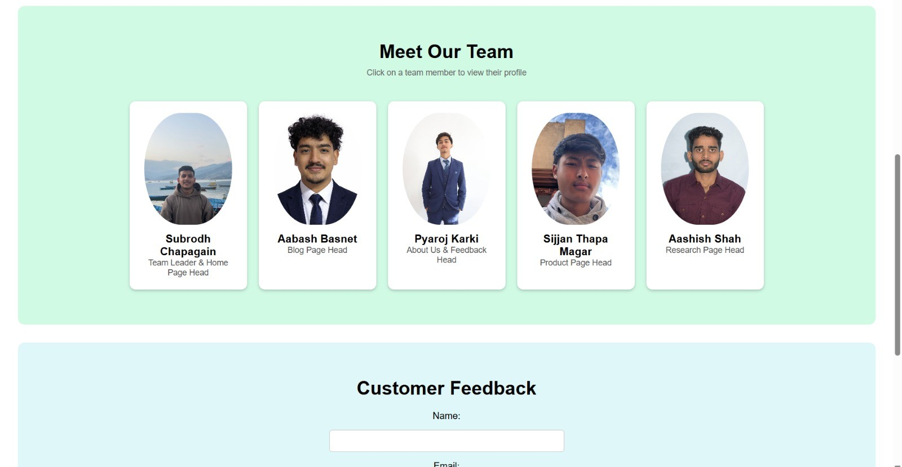

Discover the websites we referred while building EcoMart
We selected the colour theme from the Organic Online website. We also referred to their navigation layout while designing our homepage.
Our navigation bar design and layout are different. We only took inspiration for colour and structure, not the full design.
We improved the overall layout and made the homepage easier to browse and more eye-catching.
Visit reference website

For our product section, we took inspiration from the GAP website and its product card layout.
Our product cards are simpler and focused mainly on essential information such as image, price and add to cart.
We made the product cards clean, easy to read and suitable for students and first-time users.
Visit reference website

The simple layout and clear content presentation were inspired by the reference website.
Our About Us page focuses more on our project purpose and student-based design.
We made the page simple, readable and user-friendly for better understanding.
Visit reference website

We followed a clean and simple blog layout inspired by the reference website.
Our blog content is shorter and more focused on eco-friendly topics.
We improved readability and made the blog layout easier for students and general users.
Visit reference website

We followed a minimal footer design inspired by the reference website.
Our footer contains fewer links and focuses mainly on navigation and branding.
We made the footer simple and clean so users can easily find basic information.
Visit reference website

Sustainably sourced, organically grown, delivered with care...